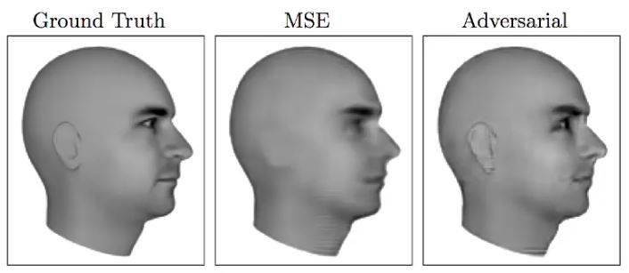
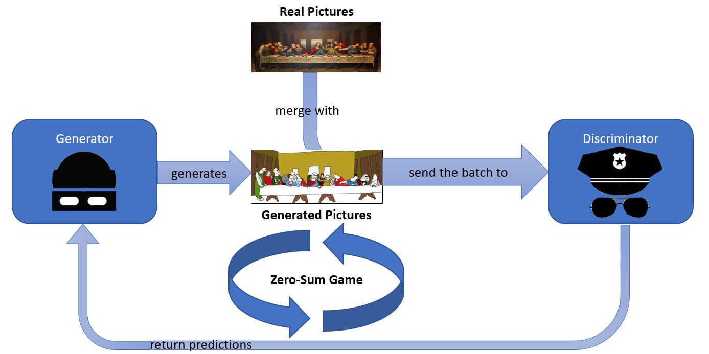
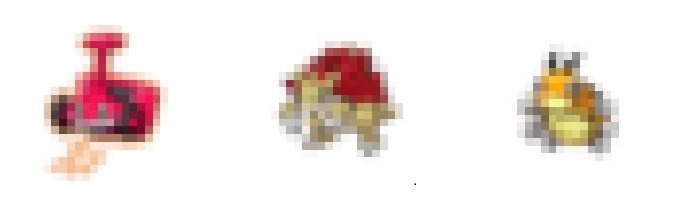
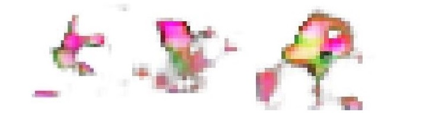

Generative Adversarial Networks
About Generative Adversarial Networks
A Generative Adversarial Network (GAN) is an Unsupervised Learning Algorithm model invented by Google Brain’s Research Scientist Ian Goodfellow in 2014. GANs can be used to learn the distribution of a dataset and generate samples following this distribution. For instance, if we take as input a huge amount of pictures of bedrooms, a GAN would be able to understand by itself what constitutes a bedroom picture and generate completely new pictures representing bedrooms:
 GAN-generated bedrooms picture
GAN-generated bedrooms picture
Generative Adversarial Networks are nowadays one of the most trending subject in Deep Learning and are said to have the best results amongst the generative models. They are indeed by design focused on the believability of generated output. For instance, regarding a generated image, edges will tend to be sharper than by using other methods, for an overall results less blurry and more pleasant to a human being:
 GAN-generated images are less blurry
“There are many interesting recent development in deep learning… The most important one, in my opinion, is adversarial training (also called GAN for Generative Adversarial Networks). This, and the variations that are now being proposed is the most interesting idea in the last 10 years in ML, in my opinion.”
~Yann LeCun, director of Facebook’s AI Research
The most commonly used metaphor to describe the internal structure of a Generative Adversarial Network is the policeman and the counterfeiter. The counterfeiter produces fake bills while the policeman tries to detect them (differenciate them from the real ones). After training for a while, the counterfeiter produces much better fake bills, but the policeman also got better at detecting them. This metaphor is pretty convenient as a GAN is composed of two entities: a Generator, which generates images, and a Discriminator, which tries to tell the generated images from the real ones. Both these entities are playing a zero-sum game as they learn: the Generator tries to fool the Discriminator by making him believe his generated images are real while the Discriminator tries to have the best predictions possible.
 Overall Structure of a GAN
In practical terms, the two models (G) and (D) coexists in the GAN model, and are trained simultaneously, using an SGD-like algorithm (here Adam optimizer) and minibatches (really small samples of data):
- the Discriminator (D) receives an input x and returns his boolean prediction on whether or not this input has been generated by (G). It is often more convenient to output two probabilities [P(x|generated), P(x|real)]. We can train this model using the actual origin of the input as label.
- the Generator (G) takes some random noise as input, and its output has the same shape/format as the actual data. As it tries to fool the Discriminator, it is trained by sending the generated output to (D) and comparing its predictions to the expected real label: [P(x|generated)=0, P(x|real)=1]
A training iteration consists in training (D) with a minibatch, then training (G) with another minibatch. Thus, as the number of training iterations increases, (G) and (D) are playing a zero-sum game in which each one tries to outsmart the other.
Generative Adversarial Networks are not only good at creating images, but can be taught the distribution of basically any latent space (inferred parameters), given enough time and data. This means that the model can be applied in a very wide range of problems, such as:
- Video classification and prediction
- Colorize drawings or black and white pictures
- Generate music or speeches
- Maybe later: Generate texts and dialogs?
A GAN example: Generating Pokémon using Keras
In order not for this to stay theorical, I implemented a GAN and trained it over a Pokémon Dataset, available here. The idea was for the generator to be able to generate completely new Pokémon. The code for the whole experiment is available here.
Imports
I used python 3.5 and the following packages:
import os, sys
from scipy.ndimage import imread
from scipy.misc import imresize
import numpy
import matplotlib.pyplot as plt
import keras
from IPython import display
from tqdm import tqdm
Image
The class Image converts a JPG or PNG image to a numpy array, for further computation:
class Image:
def __init__(self, data=None, path='img/251.png', reshape=None, normalize=True):
if data != None:
self.data = data
else:
self.data = imread(path)
if reshape != None:
self.data = imresize(self.data, reshape)
if normalize:
if self.data.dtype == 'uint8':
self.data = self.data.astype('float32')/255.
self.shape = self.data.shape
def display(self, show=True):
ax = plt.imshow(self.data)
plt.xticks([])
plt.yticks([])
if show:
plt.show()
return ax
Dataset
The class Dataset loads an entire directory of images and manage the data:
class Dataset:
def __init__(self, path="./img/", shape=(28, 28, 4), limit=None, randomized=True):
self.data = [0]
self.data += shape
self.data = numpy.empty(self.data, dtype='float32')
self.shape = shape
files = os.listdir(path)
if limit != None:
if randomized:
files = numpy.random.choice(files, limit)
else:
files = files[:limit]
self.length = len(files)
for file in files:
self.data = numpy.concatenate([self.data, [Image(path="./img/"+file, reshape=shape).data]], axis=0)
sys.stdout.write("\r {}/{} images processed".format(self.data.shape[0], self.length))
sys.stdout.flush()
print(' ')
def display(self, limit=10, randomized=True):
if randomized:
for ix in numpy.random.choice(self.length, limit):
Image(self.data[ix]).display()
def sample(self, n=10):
res = [n]
res += self.shape
res = numpy.empty(res)
i = 0
for ix in numpy.random.choice(self.length, n):
res[i] = self.data[ix]
i+=1
return res
Generator
The class Generator defines the model (G). In our case, we are using a modified Deep Convolutional Generative Adversarial Network (DCGAN). The idea is to have several Convolutional Layers stacked as they are able to understand the underlying representation of images really well:
class Generator:
def __init__(self, file=None, verbose=False):
self.optimizer = keras.optimizers.Adam(lr=1e-3)
nch = 200
self.input = keras.models.Input(shape=[100])
H = keras.layers.Dense(nch*14*14, kernel_initializer='glorot_normal')(self.input)
H = keras.layers.BatchNormalization()(H)
H = keras.layers.Activation('relu')(H)
H = keras.layers.Reshape( [14, 14, nch] )(H)
H = keras.layers.UpSampling2D(size=(2, 2))(H)
H = keras.layers.Conv2D(int(nch/2), (3, 3), padding='same', kernel_initializer='glorot_uniform')(H)
H = keras.layers.BatchNormalization()(H)
H = keras.layers.Activation('relu')(H)
H = keras.layers.Conv2D(int(nch/4), (3, 3), padding='same', kernel_initializer='glorot_uniform')(H)
H = keras.layers.BatchNormalization()(H)
H = keras.layers.Activation('relu')(H)
H = keras.layers.Conv2D(4, (1, 1), padding='same', kernel_initializer='glorot_uniform')(H)
g_V = keras.layers.Activation('sigmoid')(H)
self.generator = keras.models.Model(self.input,g_V)
self.generator.compile(loss='binary_crossentropy', optimizer=self.optimizer)
if file != None:
self.generator = keras.models.load_model(file)
self.layers = self.generator.layers
if verbose:
self.generator.summary()
def save(self, file='generator.h5'):
self.generator.save(file)
print('Generator model saved to "{}"'.format(file))
def generate_display(self):
noise = numpy.random.rand(1, 100)
Image(self.generator.predict(noise)[0]).display()
def generate(self, n=10):
noise = numpy.random.rand(n, 100)
return self.generator.predict(noise)
Discriminator
The class Discriminator defines the model (D). This is a simplified reverse-version of (G), which outputs both real and generated labels probabilities:
class Discriminator:
"""given an image as input, returns [1, 0] if the image is real, and [0, 1] if the image has been generated """
def __init__(self, file=None, shape=(28, 28, 4), verbose=False):
dropout_rate = 0.25
self.optimizer = keras.optimizers.Adam(lr=1e-4)
self.input = keras.models.Input(shape=shape)
H = keras.layers.Conv2D(256, (5, 5), strides=(2, 2), padding = 'same', activation='relu')(self.input)
H = keras.layers.LeakyReLU(0.2)(H)
H = keras.layers.Dropout(dropout_rate)(H)
H = keras.layers.Conv2D(512, (5, 5), strides=(2, 2), padding = 'same', activation='relu')(H)
H = keras.layers.LeakyReLU(0.2)(H)
H = keras.layers.Dropout(dropout_rate)(H)
H = keras.layers.Conv2D(2, (3, 3), padding = 'same', activation='relu')(H)
H = keras.layers.Flatten()(H)
d_V = keras.layers.Dense(2, activation='softmax')(H)
self.discriminator = keras.models.Model(self.input, d_V)
self.discriminator.compile(loss='categorical_crossentropy', optimizer=self.optimizer)
if file != None:
self.discriminator = keras.models.load_model(file)
self.layers = self.discriminator.layers
if verbose:
self.discriminator.summary()
def save(self, file='discriminator.h5'):
self.discriminator.save(file)
print('Discriminator model saved to "{}"'.format(file))
def freeze_training(self, _to=False):
self.discriminator.trainable = _to
for l in self.layers:
l.trainable = _to
def unfreeze_training(self, _to=True):
self.freeze_training(_to)
def predict(self, x):
return self.discriminator.predict(x)
GAN
The class GAN wraps up both models and handles the training sessions:
class GAN:
def __init__(self, shape=(28, 28, 4), dataset=None, generator=None, discriminator=None, pretrain=True, verbose=False):
if dataset!=None:
self.dataset = dataset
else:
self.dataset = Dataset(shape=shape)
self.generator = Generator(file=generator)
self.discriminator = Discriminator(file=discriminator, shape=shape)
self.gan = keras.models.Model(self.generator.input, self.discriminator.discriminator(self.generator.generator(self.generator.input)))
self.gan.compile(loss='categorical_crossentropy', optimizer=self.generator.optimizer)
self.losses = {"d":[], "g":[]}
if verbose:
self.gan.summary()
if pretrain:
self.pretrain_discriminator()
self.print_accuracy()
def pretrain_discriminator(self, n_iter=100, sample=32):
for i in tqdm(range(n_iter)):
# Train discriminator on generated images
x = numpy.concatenate([self.generator.generate(sample), self.dataset.sample(sample)], axis=0)
y = numpy.concatenate([numpy.array([[0., 1.]]*(sample), dtype='float32'), numpy.array([[1, 0.]]*(sample), dtype='float32')], axis=0)
self.discriminator.discriminator.train_on_batch(x, y)
def train(self, n_iter=2000, sample=32, plt_freq=25):
for i in tqdm(range(n_iter)):
# Train discriminator on generated images
for j in range(10):
x = numpy.concatenate([self.generator.generate(sample), self.dataset.sample(sample)], axis=0)
y = numpy.concatenate([numpy.array([[0., 1.]]*(sample), dtype='float32'), numpy.array([[1, 0.]]*(sample), dtype='float32')], axis=0)
d_loss = self.discriminator.discriminator.train_on_batch(x, y)
self.losses["d"].append(d_loss)
if d_loss > 1:
print("Retraining Discriminator")
self.pretrain_discriminator()
# train Generator-Discriminator stack on input noise to non-generated output class
self.discriminator.freeze_training()
x = numpy.random.rand(sample, 100)
y = numpy.array([[1., 0.]]*(sample), dtype='float32')
g_loss = self.gan.train_on_batch(x, y)
self.losses["g"].append(g_loss)
self.discriminator.unfreeze_training()
# Updates plots
if i%plt_freq==plt_freq-1:
self.plot_loss()
self.plot_gen()
self.print_accuracy()
return self
def save(self, generator='generator.h5', discriminator='discriminator.h5'):
self.generator.save(generator)
self.discriminator.save(discriminator)
def generate_display(self):
self.generator.generate_display()
def plot_loss(self):
display.clear_output(wait=True)
display.display(plt.gcf())
plt.figure(figsize=(10,8))
plt.plot(self.losses["d"][-100:], label='discriminative loss')
plt.plot(self.losses["g"][-100:], label='generative loss')
plt.legend()
plt.show()
def plot_gen(self, n_ex=16,dim=(4,4), figsize=(10,10)):
generated_images = self.generator.generate(n_ex)
plt.figure(figsize=figsize)
for i in range(n_ex):
plt.subplot(dim[0],dim[1],i+1)
plt.imshow(generated_images[i])
plt.axis('off')
plt.tight_layout()
plt.show()
def print_accuracy(self):
d_real = self.discriminator.predict(self.dataset.sample(100)).mean(axis=0)
print("Mean label attributed by the Discriminator to Real Data: [{:.4f}, {:.4f}]".format(d_real[0], d_real[1]))
d_gen = self.discriminator.predict(self.generator.generate(100)).mean(axis=0)
print("Mean label attributed by the Discriminator to Generated Data: [{:.4f}, {:.4f}]".format(d_gen[0], d_gen[1]))
return self
Results
Once every class is loaded, the whole GAN can be run by calling the method GAN().train(), that will train the model for 2000 iterations while prompting generated images regularly.
As I didn’t have the computing power (time + memory) to handle the 96x96 pictures from the original dataset, I chose to resize the images to a more reasonable shape of 28x28. Even though images would be too small to show detail, this example allows us to note that the GAN understood the overall representation of the Pokémon images.
 Reshaped Images from the real Data
After training the GAN for ~2000 iterations, I obtained the following results:
 Generated Images
The results are very positive, as the GAN obviously managed to understand that a Pokémon is a shape of color in the middle of a white canvas. Given enough time and computers, it would be really intersting to run the model (maybe add a Convolution layer?) on the original dataset, for more iterations.
I did encounter a lot of issues along the way though, and I can easily say that GANs are not easy to tune. It happens really often that one model learns much faster that the other, leading the optimization function to a local optima, freezing the overall progression. While building a GAN, we need to make sure that both models are progressing relatively at the same speed, using their learning rate and the size of the minibatches for instance.
References
- Ian J. Goodfellow, Jean Pouget-Abadie, Mehdi Mirza, Bing Xu, David Warde-Farley, Sherjil Ozair, Aaron Courville, Yoshua Bengio. Generative Adversarial Networks, 2014
- Ian Goodfellow. NIPS 2016 Tutorial: Generative Adversarial Networks. NIPS, 2016
- John Glover, An introduction to Generative Adversarial Networks (with code in TensorFlow), blog.aylien.com, 2016
- Alec, Radford, Luke Metz, Soumith Chintala. Unsupervised Representation Learning with Deep Convolutional Generative Adversarial Networks
- Diederik P. Kingma, Jimmy Ba. Adam: A Method for Stochastic Optimization
- Carl Vondrick, Hamed Pirsiavash and Antonio Torralba. Learning sound representations from unlabeled video. NIPS, 2016
- Kevin Frans. Outline Colorization through Tandem Adversarial Networks